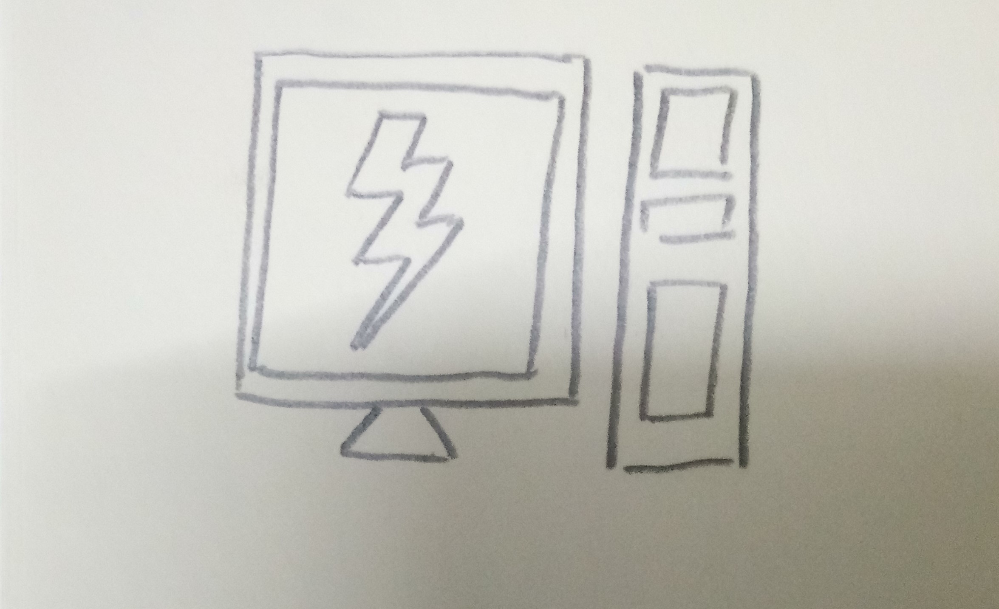

- Explain the factors that affect the file size of an image: number of colours, file compression, physical pixel dimensions, file type.
-
Number of colors
More colors in a pixel will make the image more clear and beatiful, however the size of image also increasing, as more bits will be in a pixel.
-
File compression
File compression will decrease the file size of an image, but highly compression also make the image loss its quality.
-
Physical pixel dimensions
Higher physical pixel dimensions will also make the image's file size larger. To display a larger image, ppi (pixel per inch) must be higher to make sure that the displayed image clear.
-
File type
Different file format will also affect an image's file size. JPEG format will give high quality image, but at the cost, the file size will be larger than other. GIF format will give smaller file size, but with limited color support.
- Describe the advantage of ‘transparency’ when applied to PNG over GIF
-
Transparency applied to PNG over GIF is also known as watermark. This is to prove that this GIF image is made by us, either can be used for advertisement, and also prevent others user steal and use the image by their own.
- Describe the common methods to optimise images download size and number or requests from web server.
-

Optimise image download size will be same work for every web site. To optimise image download size, we need to less using the image. Use HTML and CSS instead of some simple image, this can be great help in optimising image download size. For necessary image, use high quality image with compressed file size. Optimise request from web server will be simple too. If the web site will link to many CSS file, try combine those CSS file into one. Besides that, for Javascript, try to use external style sheet instead of internal style sheet, or inline style. When load to a web site, it will load all information from top to bottom, include the Javascript also. So, use external style sheet can help to optimise request from web server.